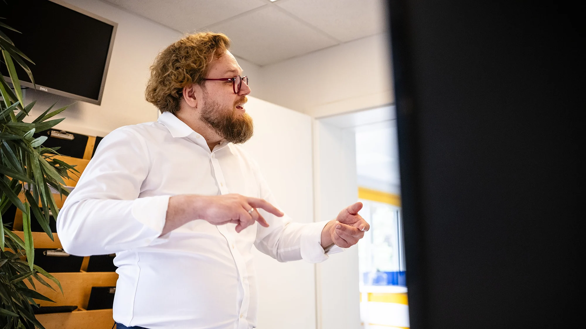
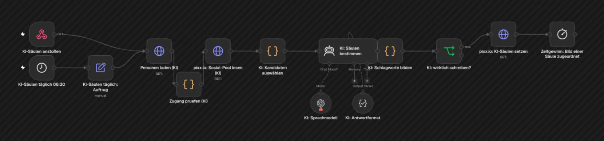

Prozesse automatisieren
Die Routine erledigt sich von selbst.
Was jeden Tag gleich abläuft, muss kein Mensch mehr anstoßen. Ihr Team hat den Kopf frei für Kunden und für alles, was sich nicht automatisieren lässt.

Prozesse verstehen, bevor man sie automatisiert
Was sich für Sie ändert.
Es geht nicht um Technik. Es geht darum, dass Dinge passieren, ohne dass jemand daran denken muss.

Echter Flow aus unserem Alltag: Eine KI ordnet jedes neue Foto einem Thema zu.
- Kein Abtippen mehr zwischen Systemen
- Urlaub und Krankheit bringen nichts mehr zum Stehen
- Social-Media-Beiträge gehen nach Ihrer Freigabe von allein raus
- Sie merken es, bevor etwas hängt, nicht erst Ihr Kunde
So machen wir das: Automatisierung mit n8n auf Ihrem eigenen Server, verbunden mit Microsoft 365, ERP, Shop und Ticketsystem. Ihre Daten bleiben bei Ihnen.
Ein Foto entsteht. Der Beitrag erscheint.
So läuft unser Social-Media-Flow. Sie entscheiden nur noch an einer Stelle. Türkis ist die Maschine. Lila sind Sie.
Läuft bei uns jeden Tag
Was Sie nicht mehr selbst tun müssen.
Diese Flows laufen bei uns produktiv. Für Ihren Betrieb bauen wir sie passend nach. Einige zeige ich im Blog im Video.
Beiträge planen und veröffentlichen
Sie geben Bild und Text frei. Danach erscheint der Beitrag von allein auf Instagram, LinkedIn und Facebook.
bei FreigabeZahlen zusammentragen
Jeden Morgen landen die Werte aus allen Systemen an einer Stelle. Niemand muss mehr Listen pflegen.
täglich, frühAbrechnung prüfen
Geleistete Zeiten werden mit dem Leistungskatalog abgeglichen. Lücken fallen auf, bevor die Rechnung rausgeht.
täglichDen Tag vorbereiten
Mails, Tickets und Termine kommen als kurze Übersicht, mit fertigen Antwortentwürfen zum Freigeben.
jeden MorgenWissen finden
Ihre Dokumente werden durchsuchbar. Ihr Team fragt in normaler Sprache und bekommt die Antwort mit Quelle.
auf AbrufRuhig schlafen
Alles wird jede Nacht gesichert. Hängt etwas, meldet sich das System von selbst.
nachtsTaktcheck
15 Minuten, die sich lohnen.
Nach unserem Gespräch wissen Sie, wo Sie Zeit verlieren, was sich automatisieren lässt und was es ungefähr kostet. Oder ich sage Ihnen ehrlich, dass es sich nicht lohnt.
- kostenlos, per Video
- ohne Vorbereitung
- kein Verkaufsgespräch
- mit kurzer Notiz danach